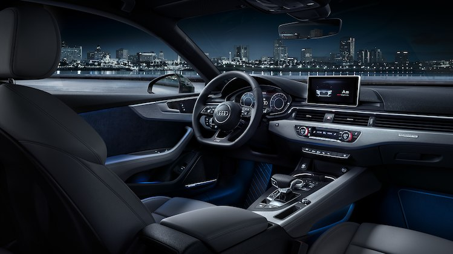
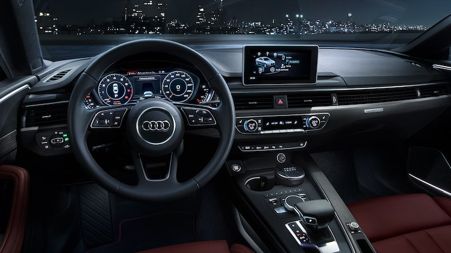
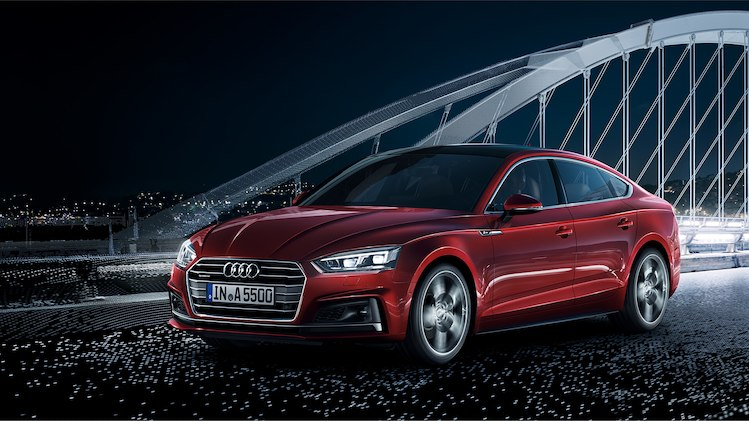

Audi A5
The Audi A5 sets the standard. Its formative design has been modernised
and is more refined. Its redesigned front with the optional Audi Matrix
LED headlights performs its dynamic function even while idling.
Technically, the Sport Coupé is state of the art: In addition to its
new body, the Audi A5 is impressive with its completely new chassis,
high-performance drive technology, innovative infotainment equipment,
and driver assistance systems.
A5 Sportback:
Fuel consumption combined *: 6.0-4.3 l/100km
CO₂-emissions combined *: 148-113 g/km
A5 Cabriolet:
Fuel consumption combined *: 6.1-4.6 l/100km
CO₂-emissions combined *: 154-122 g/km
A5 Coupe:
Fuel consumption combined *: 6.0-4.3 l/100km
CO₂-emissions combined *: 143-112 g/km

Fuel consumption combined *: 6.0-4.3 l/100km
CO₂-emissions combined *: 143-112 g/km
Sportiness and elegance
The sharp shoulder line in the form of a wave lends the Audi A5 Coupé a unique
expression of emotional elegance. The characteristic wave already distinguished
its predecessor model as a distinctive design element. It is now even more
precisely designed and captivating with its three-dimensionality, which creates
an exciting interplay of light and shadow. The slim three-dimensionally-shaped
combination rear lamps are equipped with LED technology as standard. The LED light
signature underlines the sculptural geometry of the combination rearlight.
One of the key features of the new Audi A5 Coupé is its sporty, agile driving
dynamics. In its segment, both sporty driving pleasure and comfort are decisive
factors in the tuning of the chassis. The new Audi A5 Coupé manages the balancing
act between driving pleasure on winding roads and excellent driving comfort over
long distances.

Sets standards
Perfect workmanship with optimum functionality –
the A5 Coupé offers these typical Audi characteristics in the highest
quality. High-quality materials have been processed down to the last
detail and, if desired, can be set in scene by the ambient lighting
with 30 adjustable colours. The horizontal architecture of the
instrument panel creates a wide sense of space.

The optional Audi virtual cockpit is as versatile as
it is innovative. Navigation, telephone, music, Audi connect services
and directions of assistance systems – the 12.3-inch LCD screen
provides comprehensive and precise information directly in front of
the driver. Experience more functions with the optional Audi MMI
navigation plus with MMI touch. Optional Audi smartphone interface
integrates the familiar world of Google and Apple with your Audi.
The entire MMI operating logic is based on current smartphones,
including intelligent free text search. The new, more natural voice
control also processes inputs from everyday language, e.g.
"I want to call Peter". The 3D sound of a Bang & Olufsen sound
system provides an impressive sound experience.

The Audi A5 Sportback
It combines the design of a coupe with the functionality
of an Avant. The powerfully flowing outline with the characteristic
waveform of the shoulder line makes it truly aesthetic. Under the
beautiful shell, the five-door model impresses with newly developed
chassis, powerful propulsion and innovative infotainment, as well as
connectivity solutions.
Fuel consumption combined *: 6.0-4.3 l/100km
CO₂-emissions combined *: 148-113 g/km

The Audi A5 Cabriolet
Open to the world of tomorrow – the new Audi A5
Cabriolet will excite you as soon as you see it. The exterior has
been sharpened up, especially the clean-cut shoulder line. The body of
the new A5 Cabriolet is the strongest among its competitors but is still
one of the lightest in its segment.
Fuel consumption combined *: 6.1-4.6 l/100km
CO₂-emissions combined *: 154-122 g/km